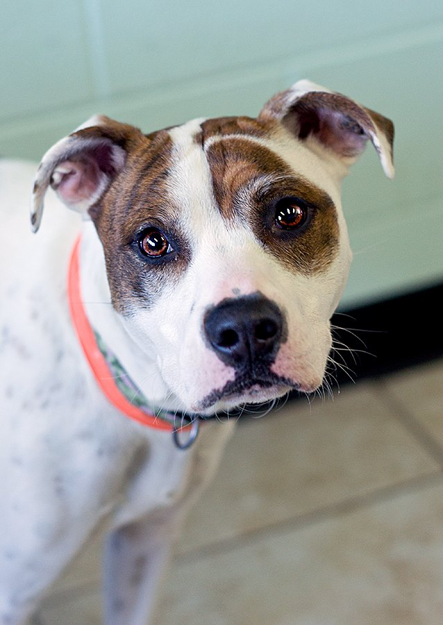

Happy Tail of the Week

Meet Lottie
Lottie was a young and adorable bully breed who was surrendered when her owners were moving. She was shy, but very sweet and only wanted to spend time with people.
We found out that Lottie came from another rescue that had since disbanded, but we were able to get in touch with her original foster mom. Her foster mom networked her and acted as her ambassador until Lottie found her true forever home!